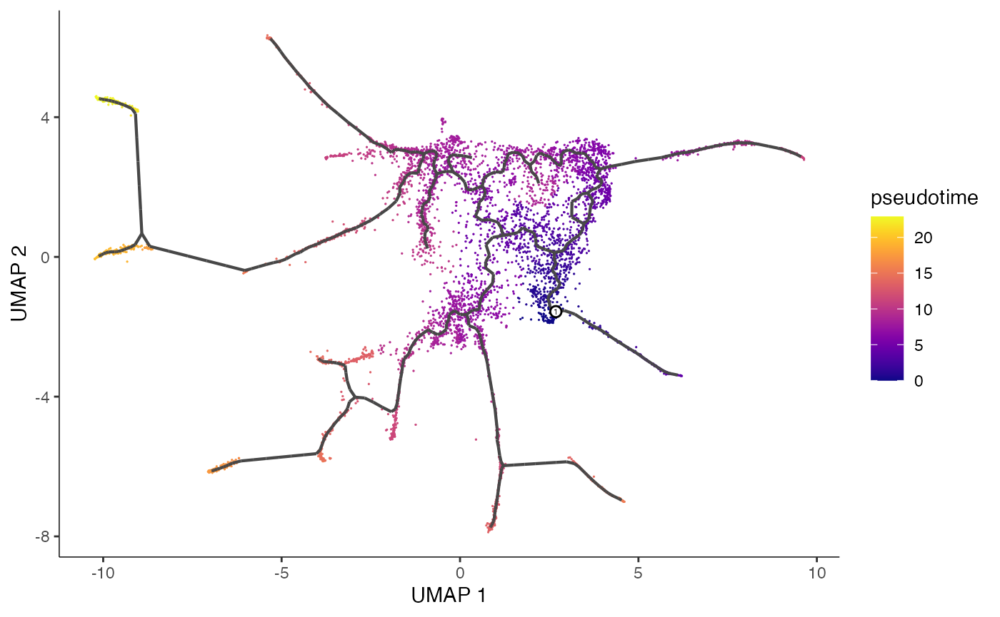

Tutorial: countsplitting with Monocle3
Source:vignettes/monocle3_tutorial.Rmd
monocle3_tutorial.RmdBefore using this tutorial, we recommend that you read through our introductory tutorial to understand our method in a simple example with simulated data.
For this tutorial, we reproduce the Monocle3 vignette, but we apply count splitting. Throughout the tutorial, we see that we reach similar takeaways to those reached in the Monocle3 vignette, despite the fact that we estimate pseudotime using only the training set.
Install Monocle3
If you don’t already have Monocle3, you will need to install it. Please visit this link for installation details. As Monocle3 is in Beta, there may be some trouble shooting involved.
Next, you should load the package, along with others that we will use in this tutorial.
library(monocle3)
library(tidyverse)
library(countsplit)Load the data and create a cell_data_set
We load the same data that is used in the Monocle3 vignette.
expression_matrix <- readRDS(url("https://depts.washington.edu:/trapnell-lab/software/monocle3/celegans/data/packer_embryo_expression.rds"))
cell_metadata <- readRDS(url("https://depts.washington.edu:/trapnell-lab/software/monocle3/celegans/data/packer_embryo_colData.rds"))
gene_annotation <- readRDS(url("https://depts.washington.edu:/trapnell-lab/software/monocle3/celegans/data/packer_embryo_rowData.rds"))We now deviate from the Monocle3 vignette to apply count splitting. We apply count splitting directly to the raw expression matrix. We then construct a cell_data_set object (used by the Monocle3 package) that contains only the training set counts.
epsilon=0.5
set.seed(1)
Xtrain <-apply(expression_matrix,2,function(u) rbinom(n=length(u), size=u, p=epsilon))
Xtest <- expression_matrix-Xtrain
cds_train <- new_cell_data_set(
Xtrain,
cell_metadata = cell_metadata,
gene_metadata = gene_annotation
)Preprocess the data
We now follow the preprocessing and pseudotime steps from the Monocle3 tutorial to come up with pseudotime estimates. Everything in this section uses the training set only.
cds_train <- preprocess_cds(cds_train, num_dim = 50)
cds_train <- align_cds(
cds_train,
alignment_group = "batch",
residual_model_formula_str = "~ bg.300.loading + bg.400.loading + bg.500.1.loading +
bg.500.2.loading + bg.r17.loading + bg.b01.loading + bg.b02.loading"
)The plot below shows that the cells cluster nicely by their cell type in reduced dimensions. This suggests that count splitting the data has not destroyed the signal in the data.
cds_train <- reduce_dimension(cds_train)
plot_cells(cds_train,
label_groups_by_cluster=FALSE,
color_cells_by = "cell.type")
Estimate pseudotime
In this section, we use the training dataset to learn the graph that will be used to estimate pseudotime. For simplicity in this tutorial, we would like to only have one pseudotime trajectory with one root node. Thus, we add the use_partition=FALSE argument to the learn_graph function to ensure that our graph is made up of a single connected trajectory.
cds_train <- cluster_cells(cds_train)
cds_train <- learn_graph(cds_train, use_partition=FALSE)Once the graph is learned, Monocle3 computes pseudotime with the order_cells() function. This function simply projects the cells onto the principal graph to get a one dimensional representation. The only additional step is picking a root node in the graph that will correspond to 0 in pseudotime space. To pick a root node for pseudotime, we use the same method as in the Monocle3 vignette. We pick the cell from the first time bin that is closest to a graph vertex.
get_earliest_principal_node <- function(cds, time_bin="130-170"){
cell_ids <- which(colData(cds)[, "embryo.time.bin"] == time_bin)
closest_vertex <-
cds@principal_graph_aux[["UMAP"]]$pr_graph_cell_proj_closest_vertex
closest_vertex <- as.matrix(closest_vertex[colnames(cds), ])
root_pr_nodes <-
igraph::V(principal_graph(cds)[["UMAP"]])$name[as.numeric(names
(which.max(table(closest_vertex[cell_ids,]))))]
root_pr_nodes
}
cds_train <- order_cells(cds_train, root_pr_nodes=get_earliest_principal_node(cds_train))We now have estimated pseudotime, and we can plot our learned graph with cells colored by pseudotime.
plot_cells(cds_train,
color_cells_by = "pseudotime",
label_cell_groups=FALSE,
label_leaves=FALSE,
label_branch_points=FALSE,
graph_label_size=1.5)
Finding genes that are differentially expressed across pseudotime
Now that we have estimated pseudotime using the training set, we are ready to study differential expression along pseudotime. In this section, we rely on the pseudotime from the training set but we rely on the test set counts for differential expression analysis.
By hand
First, we carry out differential expression testing “by hand.” We fit a quasipoisson GLM of each test set gene onto the pseudotime computed from the training set. (We choose quasipoisson since this is the default family for the fit_models() function in Monocle3.) For computational efficiency, we only do this for the first 500 genes. We include the size factors estimated on the training as offsets in the regression.
pseudotime.train <- pseudotime(cds_train)
sf.train <- colData(cds_train)$Size_Factor
results <- apply(Xtest[1:500,], 1, function(u) summary(glm(u~pseudotime.train, offset = log(sf.train), family="quasipoisson"))$coefficients[2,2])
head(results, n=10)## WBGene00010957 WBGene00010958 WBGene00010959 WBGene00010960 WBGene00010961
## 0.002260399 0.007547423 0.002622328 0.002473421 0.005321465
## WBGene00000829 WBGene00010962 WBGene00010963 WBGene00010964 WBGene00010965
## 0.002964884 0.002445576 0.003913811 0.002597764 0.002211407The results above show the differential expression p-value for each of the first 10 genes in the dataset.
Using Monocle3’s Graph Test
This section follows the “finding genes that change as a function of pseudotime” section of the Monocle3 vignette. The differential expression testing method recommended in the Monocle3 tutorial is graph_test(), which uses Moran’s I statistics to test if cells that are adjacent in pseudotime space have similar expression values for certain genes.
In this section, we will need our test set to be stored in a cell_data_set that contains the test set counts. We need this object to store the training set graph. To accomplish this, we make a copy of cds_train and only update the counts.
cds_test <- cds_train
counts(cds_test) <- Xtest We now run the graph_test function, which is the preferred Monocle3 methodology for finding genes that vary across pseudotime.
ciliated_cds_pr_test_res <- graph_test(cds_test, neighbor_graph="principal_graph", cores=4)
pr_deg_ids <- row.names(subset(ciliated_cds_pr_test_res, q_value < 0.0005)) Here are a couple of interesting genes that score as highly significant according to graph_test(), both in our analysis and in the analysis in the Monocle3 vignette. We can see that the expression levels of these genes do vary a lot in pseudotime space (these genes are highly expressed in very specific regions of the graph).
plot_cells(cds_test, genes=c("hlh-4", "gcy-8", "dac-1", "oig-8"),
show_trajectory_graph=FALSE,
label_cell_groups=FALSE,
label_leaves=FALSE) 
We can also select specific genes and plot their expression across pseudotime. As in the Monocle3 vignette, we see that all three of these genes get “activated” midway through the trajectory, but dac-1 is activated slightly before the others.
AFD_genes <- c("gcy-8", "dac-1", "oig-8")
AFD_lineage_cds <- cds_test[rowData(cds_test)$gene_short_name %in% AFD_genes,
colData(cds_test)$cell.type %in% c("AFD")]
plot_genes_in_pseudotime(AFD_lineage_cds, color_cells_by="embryo.time.bin",min_expr=0.5) 
The analysis in this tutorial identifies differentially expressed genes without double dipping in the data, and thus improves upon the analysis in the Monocle3 vignette.